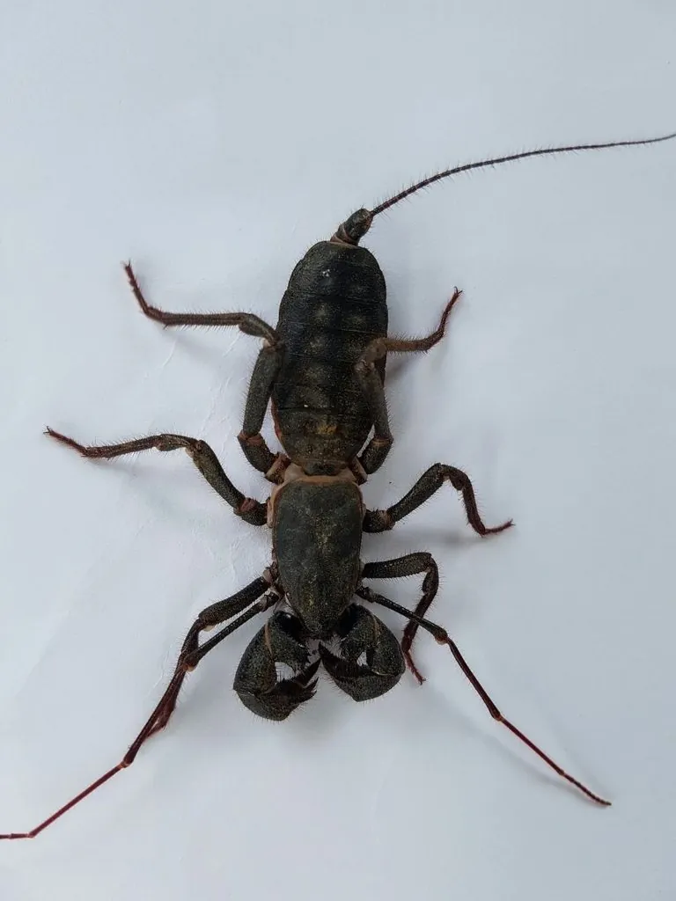

蛛形动物 · 动物界
鞭蝎 Mastigoproctus giganteus

北美南部的大型鞭蝎，尾部细长如鞭却没有毒针，受惊时会喷出醋酸味的液体自卫，因此又叫“醋蝎”。
- 分类
- 门节肢动物门纲蛛形纲目鞭蝎目科鞭蝎科属鞭蝎属
- 栖息环境
- 美国南部与墨西哥的荒漠、灌丛、落叶林及洞穴石缝
- 地理分布
- 美国南部和墨西哥的干旱与半干旱地区
- 保护级别
- IUCN 暂无评估；非中国原产，在中国无保护级别
物种志
鞭蝎体长 5–8 厘米，身体粗壮，头胸部有坚硬的背甲，第一对足细长如触角，用于探路；腹部末端延伸出一条细长的鞭状尾，但没有毒针，这是它与蝎子的主要区别。它的螯肢强壮，能夹住昆虫。
它分布于美国南部和墨西哥的荒漠、灌丛与落叶林，夜行性，喜欢藏在石块、倒木和洞穴中，捕食昆虫、蠕虫和其他小型无脊椎动物。受惊时它会把腹部末端对准对方，从肛门腺喷出含醋酸和辛酸的液体，气味刺鼻，“醋蝎”之名由此而来；它的外形介于蝎和蜘蛛之间，常被误认为毒蝎，其实并没有毒针。雌蝎产卵后会守在卵旁，幼蝎孵化后会爬到母蝎背上生活一段时间。鞭蝎不会主动伤人，但喷出的酸液若溅入眼睛需立即用清水冲洗。
形态与习性
- 食性昆虫、蠕虫和其他小型无脊椎动物
- 体长5–8 cm（含尾鞭）
- 寿命约 5–8 年
- 繁殖卵生，雌蝎护卵，幼蝎孵出后爬上母背
- 活动节律夜行性，白天藏在石块倒木下
- 防御喷出含醋酸的液体自卫，无毒针、不咬人
趣味知识
- 鞭蝎的尾部像一条细鞭，但没有毒针，这是它与蝎子最大的区别。
- 受惊时它会喷出醋酸味的液体，因此得名“醋蝎”。
- 雌鞭蝎会守护卵块，幼蝎孵化后爬到母蝎背上生活一段时间。